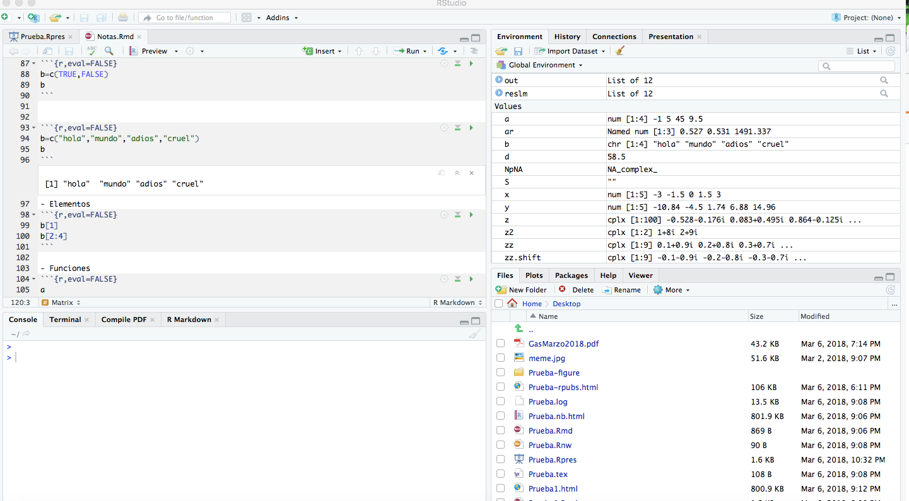

getwd() # obtiene la carpeta en la cual se esta trabajando
setwd("~/Dropbox/UNAM/Econometria")
setwd("C:/Sharon/Documents/RProjects")
dir() #despliega los archivos del directorioActividad 01
Objetivo: Tener disponible un ambiente para la ejecución de R.
Tipo de trabajo: Individual
Revisa el siguiente video, para que tengas una perspectiva general de R, en caso que no la tengas.
- R es un lenguaje gratuito para computación estadística (Linux, MacOS, Windows)
- 1991 creado por Ross Ihaka y Robert Gentleman, en 1993 se anuncia la primer versión pública
- 1995 se convierte en software gratuito.
- Es la versión no comercial de S, desarrollado por John Chambers y otros en Bell Labs (1976), inicialmente programado en Fortran, en 1988 se escribe en C, 1998 sale la versión 4.
- Ayuda en la red
- Versiones anuales
- “Menos amigable que MATLAB pero más que C++ y Fortran”
- “I have written software professionally in perhaps a dozen programming languages, and the hardest language for me to learn has been R,” writes consultant John D. Cook
Instalación local
En el orden inidicado
RStudio
- Console window (command window)
- Editor Window
- History, Environment
- Files, Plots, Package
- Documentación de RStudio

Se supone que se tienen una interfaz para programar en R
Directorio de trabajo y ayuda
- Directorio de trabajo comando
- Directorio de trabajo con ambiente gráfico Session-Set Working Directory
- Ayuda en console
help.start()
help(matrix) # aplica también para funciones
?matrix # aplica también para funciones
apropos("matrix")
example("matrix")
args(rnorm) # conocer los argumentos de una función- Ayuda en la web
- Comentarios
# Ignorado por el programa, por linea- Librerías disponibles
library()- Instalar paquetes, actualizar
update.packages() # Actualizar todos los paquetes
install.packages("mcsm")
update.packages("mcsm")- Cargar libreria disponible
library(MASS)
library(coda)
library(mcsm)Uso de R en colab
Se puede utilizar R en colab de google. Para ello se tienen por lo menos dos alternativas
Ejecutar una celda de colab la instrucción
%load_ext rpy2.ipython
Y posteriormente utilizar al principio de cada celda de código el comando mágico %%R. Por ejemplo
%%R
x <- seq(0, 2*pi, length.out=50)
xEsto permite la ejecución simultanea de Python y R en el mismo notebook. El siguiente notebook muestra este ejemplo
- Entrar a la siguiente dirección https://colab.to/r (posteriormente mover el archivo desde Drive a la ubicación deseada). Directamente se puede comenzar a trabajar con R. El siguiente colab de ejemplo se construye de esa manera.
Al hacer uso de este ambiente se tienen algunas limitaciones y problemas. Puede consultarse el post How to Use R with Google Colab Notebook para ver como instalar paquetes.
Uso del repositorio
Puede utilizarse el siguiente servicio creado con binder. Es necesario estar atento de la sesión, si no se descarga el trabajo o se tiene mucho tiempo inactivo, se pueden perder los avances
Otras alternativas
- Kaggle
- RStudio Cloud
- En general servicios en la nube
Instrucciones de entrega
Realiza una instalación local de R, puedes apoyarte de los enlaces de la sección correspondiere o de un video de instalación que encuentres en la red
Realiza un impresión de pantalla que muestre la instalación de R y RStudio
Carga en el lugar correspondiente de la plataforma la imagen generada.